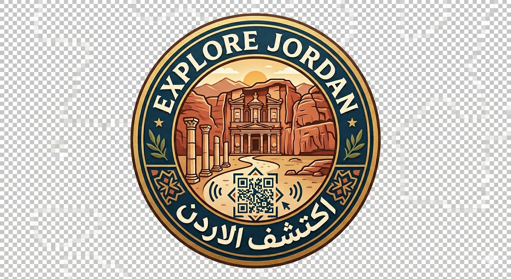

Tech Creators Expo 2026 · أكاديمية الحُفّاظ

بطاقات اكتشاف الأردن
Jordan Discovery Cards
مدرسة النهضة الرقمية
بوابتك التفاعلية لاستكشاف أجمل المعالم الأردنية — تاريخ، علم، وجمال في بطاقة واحدة
Your interactive gateway to Jordan's most iconic landmarks
11معلم أثري
QRتفاعلي
2لغتان
Explore · اكتشف
المعالم الأردنية الـ11
امسح رمز QR لكل بطاقة للانتقال مباشرة لصفحة المعلم التفصيلية
عن المشروع | About
مشروع "بطاقات اكتشاف الأردن" يجمع بين التعليم والسياحة من خلال بطاقات تفاعلية تحمل معلومات غنية عن أجمل مواقع المملكة الأردنية الهاشمية، مع رمز QR يفتح تجربة رقمية كاملة.
🏛️
تاريخ موثق
معلومات تاريخية دقيقة عن كل موقع
📱
QR تفاعلي
امسح وانتقل مباشرة لصفحة المعلم
🌍
ثنائي اللغة
محتوى كامل بالعربية والإنجليزية
🔬
معلومة علمية
حقائق علمية مبسطة لكل موقع
♻️
سياحة مستدامة
نشجع الزيارة المسؤولة والحفاظ على التراث